7 神经网络
神经网络（NNs）是一个非常丰富和复杂的主题。在本章中，我们介绍 NNs 最简单架构背后的简单思想和概念。对于 NN 特性的更详尽的处理，我们参考了专着 Haykin (2009), K.-L. Du and Swamy (2013) 和 Goodfellow et al. (2016)。后者可在线免费获取：www.deeplearningbook.org。对于实用的介绍，我们推荐这本伟大的书 Chollet (2017).
首先，我们简要评论一下“神经网络”这个资格。大多数专家都认为这个术语选择得不太好，因为 NNs 与人脑的工作原理关系不大（我们对此知之甚少）。这解释了为什么它们经常被称为“人工神经网络”——为了符号简单起见，我们不使用该形容词。因为我们认为它更合适，我们回顾一下 François Chollet 给出的 NNs 的定义：“可微分、参数化几何函数链，通过梯度下降进行训练（通过链式法则获得梯度）”.
神经网络在金融领域的早期参考文献是 Bansal and Viswanathan (1993) 和 Eakins, Stansell, and Buck (1998)。两者都有非常不同的目标。在第一个中，作者的目的是估计 非线性形式 为定价内核。第二个目标是确定和量化股票的机构投资与公司属性之间的关系（对因子投资的早期贡献）。早期审查（Burrell and Folarin (1997)）列出了 20 世纪 90 年代 NNs 的金融应用。最近， Sezer, Gudelek, and Ozbayoglu (2019), W. Jiang (2020) 和 Lim and Zohren (2021) 调查主要由计算机科学学者使用深度学习模型预测金融时间序列的尝试。
NNs 在金融市场中的纯粹预测能力是一个热门话题，我们进一步举出例子 Kimoto et al. (1990), Enke and Thawornwong (2005), Y. Zhang and Wu (2009), Guresen, Kayakutlu, and Daim (2011), Krauss, Do, and Huck (2017), Fischer and Krauss (2018), Aldridge and Avellaneda (2019), Babiak and Barunik (2020), Y. Ma, Han, and Wang (2020), 和 Soleymani and Paquet (2020)^[神经网络最近也被应用于衍生品定价和对冲，例如参见 Buehler et al. (2019) 和 Andersson and Oosterlee (2020) 以及调查 Ruf and Wang (2019)。在 Wu et al. (2020)，发现深度学习对于选择表现良好的对冲基金是有效的。一些文章发现 NNs 在股票市场预测任务中表现不佳（以及更普遍的表格数据）。 Y. Wei (2021) 认为这是因为 RMSE 不适合股票收益率预测，因为方向才是重要的（当然，方向也可能是标签！）。
限价订单簿建模也是神经网络应用的一个不断扩展的领域（Sirignano and Cont (2019), Wallbridge (2020)).] 最后一个参考甚至结合了嵌入总体强化学习结构中的几种类型的 NNs。这个列表远非详尽无遗。在金融经济学领域，神经网络的最新研究包括：
-
Feng, Polson, and Xu (2019) 使用神经网络找到最能解释股票收益横截面的因素。
-
Gu, Kelly, and Xiu (2020b) 将公司属性和宏观经济变量映射到未来收益率。这创建了一个强大的预测工具，能够非常准确地预测未来的收益率。
- Luyang Chen, Pelger, and Zhu (2020) 使用包括生成对抗网络的复杂神经网络结构来估计定价内核。这再次提供了有关预期股票收益率结构的重要信息，并可用于投资组合构建（通过建立准确的最大夏普比率策略）。
7.1 原始感知器
NNs 的起源至少可以追溯到 Rosenblatt (1958)。其目标是二元分类。为了简单起见，我们假设输出是 \(\{0\) = 不投资\(\}\) 与 \(\{1\) = 投资\(\}\) （例如，从收益率、负值与正值导出）。给定当前的命名法，感知器可以定义为激活的线性映射。模型如下：
\[f(\mathbf{x})=\left\{ \begin{array}{lll} 1 & \text{if } \mathbf{x}'\mathbf{w}+b >0\\ 0 &\text{otherwise} \end{array}\right.\] 权重向量 \(\mathbf{w}\) 缩放变量和偏差 \(b\) 改变决策障碍。给定值 \(b\) 和 \(w_i\)，错误是 \(\epsilon_i=y_i-1_{\left\{\sum_{j=1}^Jx_{i,j}w_j+w_0>0\right\}}\)。按照惯例，我们设置 \(b=w_0\) 并添加一个初始常量列 \(x\): \(x_{i,0}=1\)，这样 \(\epsilon_i=y_i-1_{\left\{\sum_{j=0}^Jx_{i,j}w_j>0\right\}}\)。与回归相反，感知器没有封闭式解决方案。最佳权重只能是近似值。就像回归一样，获得良好权重的一种方法是最小化误差平方和。为此，最简单的方法是
- 计算该点的当前模型值 \(\textbf{x}_i\): \(\tilde{y}_i=1_{\left\{\sum_{j=0}^Jw_jx_{i,j}>0\right\}}\),
- 调整权重向量： \(w_j \leftarrow w_j + \eta (y_i-\tilde{y}_i)x_{i,j}\),
这相当于将重量朝这个方向移动。就像树方法一样，缩放因子 \(\eta\) 是学习率。一个大 \(\eta\) 将意味着巨大的转变：学习会很快，但收敛可能很慢，甚至可能不会发生。一个小 \(\eta\) 通常是更可取的，因为它有助于降低过度拟合的风险。
图中 7.1，我们说明了这种机制。初始模型（灰色虚线）在 7 个点（3 个红色和 4 个蓝色）上进行训练。一个新的黑点出现了。
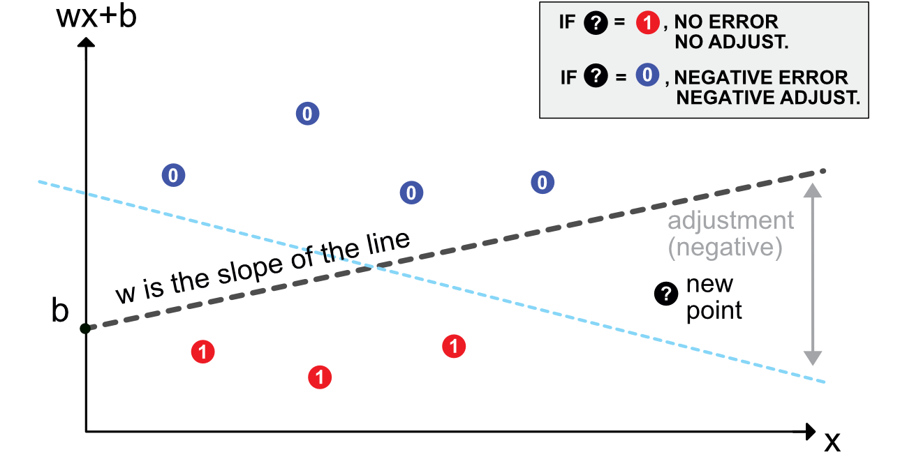
图 7.1：感知器方案。
- 如果该点为红色，则无需调整：它被正确标记，因为它位于边框的右侧。
- 如果该点是蓝色的，则需要适当更新模型。根据上述规则，这意味着向下调整线的斜率。取决于 \(\eta\)，这种转变将足以改变新点的分类——或者不改变。
在其诞生之初，感知器是一项巨大的突破，受到了媒体的广泛报道（参见 Olazaran (1996) 和 Anderson and Rosenfeld (2000)）。其相当简单的结构逐渐推广到感知器网络（组合）。它们中的每一个都是一个简单的单元，单元又被聚集成一层。下一节描述简单多层感知器 (MLPs) 的组织。
7.2 多层感知器
7.2.1 简介和注释
感知器可以被视为应用了特定函数的线性模型：Heaviside（阶跃）函数。其他功能选择自然也是可能的。在 NN 行话中，它们被称为激活函数。它们的目的是在其他非常线性的模型中引入非线性。
就像带有树的随机森林一样，神经网络背后的想法是将类似感知器的构建块组合起来。神经网络的一种流行表示如图所示 7.2。这张示意图过于简化。它隐藏了真正发生的事情：每个绿色圆圈中有一个感知器，每个输出在发送到最终输出聚合之前都由某个函数激活。这就是为什么这样的模型被称为多层感知器（MLP）。
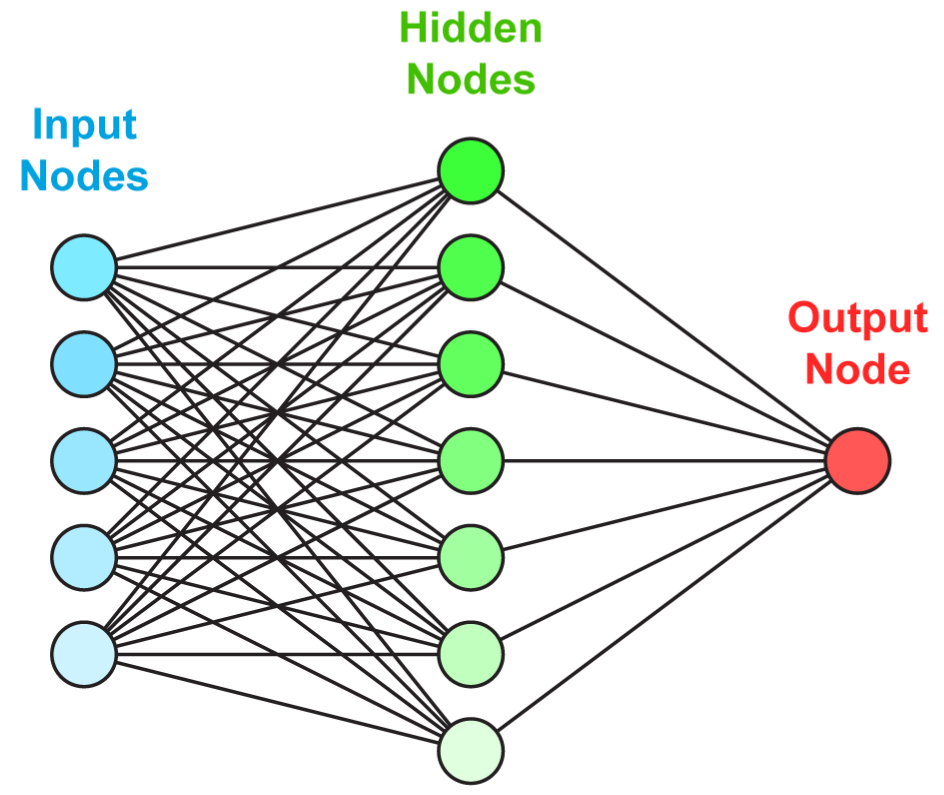
图 7.2：多层感知器的简化示意图。
图中更忠实地描述了正在发生的事情 7.3.
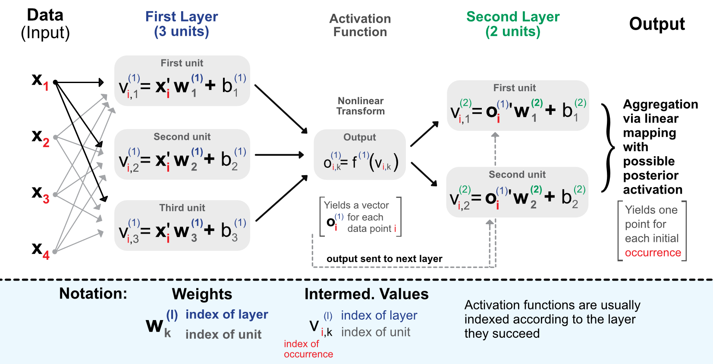
图 7.3：具有 2 个中间层的感知器的详细示意图。
在继续进行评论之前，我们先介绍一些将在本章中使用的符号。
- 数据被分成一个矩阵 \(\textbf{X}=x_{i,j}\) 特征和输出值向量 \(\textbf{y}=y_i\). \(\textbf{x}\) 或 \(\textbf{x}_i\) 表示一行 \(\textbf{X}\).
- 神经网络将具有 \(L\ge1\) 层和每层 \(l\)，单位数为 \(U_l\ge1\).
- 单位权重 \(k\) 位于层 \(l\) 表示为 \(\textbf{w}_{k}^{(l)}=w_{k,j}^{(l)}\) 以及相应的偏差 \(b_{k}^{(l)}\)。长度为 \(\textbf{w}_{k}^{(l)}\) 等于 \(U_{l-1}\). \(k\) 指单元在图层中的位置 \(l\) 同时 \(j\) 到层中的单元 \(l-1\).
- 输出（激活后）表示为 \(o_{i,k}^{(l)}\) 例如 \(i\), 层 \(l\) 和单位 \(k\).
过程如下。当进入网络时，数据经过初始线性映射：
\[v_{i,k}^{(1)}=\textbf{x}_i'\textbf{w}^{(1)}_k+b_k^{(1)}, \text{for } l=1, \quad k \in [1,U_1], \]
然后通过非线性函数进行变换 \(f^{1}\)。然后，此更改的结果将作为下一层的输入给出，依此类推。网络的每一层都会重复线性形式（具有不同的权重）：
\[v_{i,k}^{(l)}=(\textbf{o}^{(l-1)}_i)'\textbf{w}^{(l)}_k+b_k^{(l)}, \text{for } l \ge 2, \quad k \in [1,U_l]. \]
层之间的连接就是所谓的输出，它们基本上是激活函数到的线性映射 \(f^{(l)}\) 已被应用。层的输出 \(l\) 是层的输入 \(l+1\).
\[o_{i,k}^{(l)}=f^{(l)}\left(v_{i,k}^{(l)}\right).\]
最后，终端阶段聚合最后一层的输出：
\[\tilde{y}_i =f^{(L+1)} \left((\textbf{o}^{(L)}_i)'\textbf{w}^{(L+1)}+b^{(L+1)}\right).\]
在输入的前向传播中，激活函数自然发挥着重要作用。图中 7.4，我们绘制了神经网络库最常用的激活函数。有关激活函数的详尽列表，我们参考 Dubey, Singh, and Chaudhuri (2022).
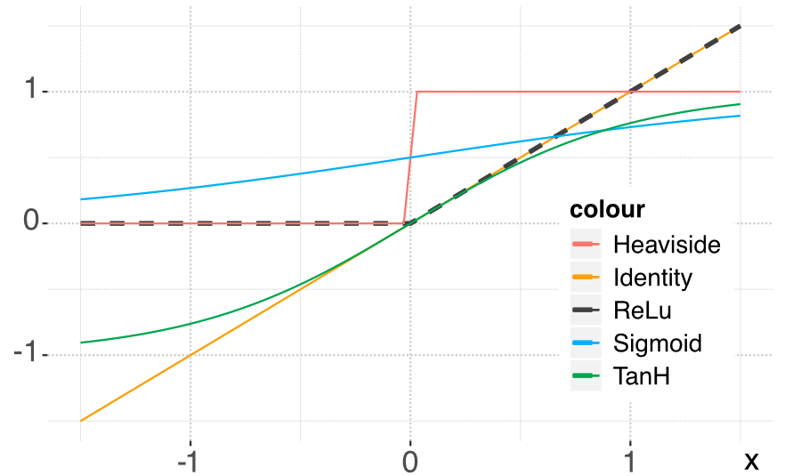
图 7.4：最常见的激活函数图。
让我们从因子投资的角度重新表述这个过程。输入 \(\textbf{x}\) 是企业的特点。第一步是将它们的值乘以权重并添加偏差。这是针对第一层的所有单元执行的。输出是输入的线性组合，然后由激活函数进行转换。每个单元提供一个值，所有这些值都按照相同的过程馈送到第二层。如此迭代直至网络结束。最后一层的目的是产生与标签相对应的输出形状：如果标签是数字，则输出是单个数字，如果是分类，则通常是长度等于类别数的向量。该向量指示该值属于某一特定类别的概率。
可以在输出后使用最终激活函数。这对结果非常重要。事实上，如果标签是收益率，那么在最后应用 sigmoid 函数将是灾难性的，因为 sigmoid 始终为正。
7.2.2 万能近似
神经网络运作良好的原因之一是它们 万能逼近器。给定任何有界连续函数，存在一个单层网络可以将该函数近似到任意精度（参见 Cybenko (1989) 对于早期参考，请参阅第 4.2 节 K.-L. Du and Swamy (2013) 和第 6.4.1 节 Goodfellow et al. (2016) 获取更详尽的论文列表，以及 Guliyev and Ismailov (2018) 以获得最近的结果）。
形式上，单层感知器定义为 \[f_n(\textbf{x})=\sum_{l=1}^nc_l\phi(\textbf{x}\textbf{w}_l+\textbf{b}_l)+c_0,\] 其中 \(\phi\) 是（非常数）有界连续函数。那么，对于任意 \(\epsilon>0\), 可以找到一个 \(n\) 这样对于任何连续函数 \(f\) 在单位超立方体上 \([0,1]^d\), \[|f(\textbf{x})-f_n(\textbf{x})|< \epsilon, \quad \forall \textbf{x} \in [0,1]^d.\]
这个结果相当直观：只需向图层添加单元即可提高拟合度。该过程或多或少类似于多项式逼近，尽管根据激活函数的属性（有界性、平滑性、凸性等）会出现一些微妙之处。我们参考 Costarelli, Spigler, and Vinti (2016) 有关此主题的调查。
万能逼近的原始结果意味着任何表现良好的函数 \(f\) 只要单元数量可以任意大，就可以通过简单的神经网络充分接近。现在，它们与学习阶段（即模型针对特定数据集进行优化时）没有直接关系。在一系列论文中（Barron (1993) 和 Barron (1994)，值得注意的是），巴伦对神经网络可以实现的目标给出了更精确的描述。在 Barron (1993) 例如，它被证明是通用逼近的更精确版本：对于特定的神经网络（具有 sigmoid 激活）， \(\mathbb{E}[(f(\textbf{x})-f_n(\textbf{x}))^2]\le c_f/n\)，它给出了与网络规模相关的收敛速度。在期望中，随机项是 \(\textbf{x}\)：这对应于数据被视为独立同分布样本的情况。固定分布的观察（这是机器学习中最常见的假设）。
下面，我们陈述一个易于解释的重要结果；它取自 Barron (1994).
在续集中， \(f_n\) 对应于一个可能受到惩罚的神经网络，只有一个中间层 \(n\) 单位和 sigmoid 激活函数。此外，假设预测变量和标签的支持都是有界的（这不是主要约束）。回归练习中最重要的指标是均方误差 (MSE)，主要结果是该量的界限（按数量级）。对于 \(N\) 随机采样 i.i.d点 \(y_i=f(x_i)+\epsilon_i\) 其上 \(f_n\) 经过训练，最好的经验 MSE 的行为类似于
\[\begin{equation} \tag{7.1} \mathbb{E}\left[(f(x)-f_n(x))^2 \right]=\underbrace{O\left(\frac{c_f}{n} \right)}_{\text{size of network}}+\ \underbrace{O\left(\frac{nK \log(N)}{N} \right)}_{\text{size of sample}}, \end{equation}\] 其中 \(K\) 是输入的维度（列数）并且 \(c_f\) 是一个取决于生成器函数的常数 \(f\)。上述数量提供了给定数据集大小的最佳神经网络可以实现的误差范围 \(N\).
这个界限的分解显然有两个组成部分。第一个与网络的复杂性有关。正如最初的万能逼近定理一样，误差随着网络中单元数量的增加而减小。但这还不够！事实上，样本量当然是学习质量（独立同分布观察）的关键驱动因素。界限的第二个组成部分表明，相对于观测值的数量，误差以稍慢的速度下降（\(\log(N)/N\)）并且与单元数量和输入大小呈线性关系。这清楚地强调了样本大小和模型复杂性之间的联系（权衡？）：如果样本很小，那么拥有非常复杂的模型是没有用的，就像简单的模型无法捕捉大型数据集中的精细关系一样。
总的来说，神经网络可能是一个非常复杂的函数，具有很多参数。在线性回归中，可以通过虚假添加外生变量来增加拟合度。在神经网络中，通过向层任意添加单元来增加参数数量就足够了。这当然是一个非常糟糕的主意，因为高维网络将主要捕获它们所训练的样本的特殊性。
7.2.3 通过反向传播学习
就像树方法一样，神经网络是通过最小化某些损失函数进行训练的，并受到一些惩罚： \[O=\sum_{i=1}^I \text{loss}(y_i,\tilde{y}_i)+ \text{penalization},\] 其中 \(\tilde{y}_i\) 是模型获得的值， \(y_i\) 是 真实 实例的值。简化计算的一个简单要求是损失函数可微。最常见的选择是回归任务的平方误差和分类任务的交叉熵。我们将在下一小节中讨论分类的技术细节。
神经网络的训练相当于改变所有层中所有单元的权重（和偏差），以便 \(O\) 上面定义的是最小的可能值。为了简化符号并考虑到 \(y_i\) 是固定的，让我们写 \(D(\tilde{y}_i(\textbf{W}))=\text{loss}(y_i,\tilde{y}_i)\), 其中 \(\textbf{W}\) 表示网络中的权重和偏差的整体。权重的更新将通过梯度下降来执行，即通过
\[\begin{equation} \tag{7.2} \textbf{W} \leftarrow \textbf{W}-\eta \frac{\partial D(\tilde{y}_i) }{\partial \textbf{W}}. \end{equation}\]
这种机制是优化文献中最经典的，我们在图中进行了说明 7.5。我们强调大学习率可能存在次优性。在图中，与高相关的下降 \(\eta\) 会围绕最优点振荡，而与小 eta 相关的点会更直接地收敛。
上式中的复杂任务是计算梯度（导数），它告诉应该在哪个方向进行调整。问题在于连续的嵌套层和关联的激活需要链式法则的多次迭代才能微分。
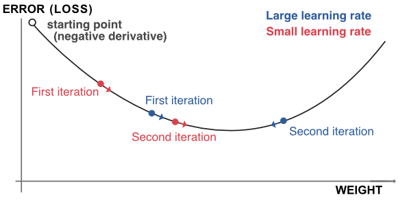
图 7.5：梯度下降的轮廓。
近似导数的最常见方法可能是有限差分法。在通常的假设下（损失是两次可微的），中心差满足：
\[\frac{\partial D(\tilde{y}_i(w_k))}{\partial w_k} = \frac{D(\tilde{y}_i(w_k+h))-D(\tilde{y}_i(w_k-h))}{2h}+O(h^2),\] 其中 \(h>0\) 是某个任意小的数字。尽管其表面上很简单，但该方法的计算成本很高，因为它需要进行与权重数量相当的大量操作。
幸运的是，有一个小技巧可以大大简化并加快计算速度。这个想法是简单地遵循链式法则并沿途循环使用术语。让我们先回顾一下 \[\tilde{y}_i =f^{(L+1)} \left((\textbf{o}^{(L)}_i)'\textbf{w}^{(L+1)}+b^{(L+1)}\right)=f^{(L+1)}\left(b^{(L+1)}+\sum_{k=1}^{U_L} w^{(L+1)}_ko^{(L)}_{i,k} \right),\] 因此，如果我们用最直接的权重和偏差进行微分，我们会得到： \[\begin{align} \frac{\partial D(\tilde{y}_i)}{\partial w_k^{(L+1)}}&=D'(\tilde{y}_i) \left(f^{(L+1)} \right)'\left( b^{(L+1)}+\sum_{k=1}^{U_L} w^{(L+1)}_ko^{(L)}_{i,k} \right)o^{(L)}_{i,k} \\ \tag{7.3} &= D'(\tilde{y}_i) \left(f^{(L+1)} \right)'\left( v^{(L+1)}_{i,k} \right)o^{(L)}_{i,k} \\ \frac{\partial D(\tilde{y}_i)}{\partial b^{(L+1)}}&=D'(\tilde{y}_i) \left(f^{(L+1)} \right)'\left( b^{(L+1)}+\sum_{k=1}^{U_L} w^{(L+1)}_ko^{(L)}_{i,k} \right). \end{align}\]
这是最简单的部分。我们现在必须返回一层，这只能通过链式法则来完成。至接入层 \(L\)，我们回忆起身份 \(v_{i,k}^{(L)}=(\textbf{o}^{(L-1)}_i)'\textbf{w}^{(L)}_k+b_k^{(L)}=b_k^{(L)}+\sum_{j=1}^{U_L}o^{(L-1)}_{i,j}w^{(L)}_{k,j}\)。 然后我们可以继续：
\[\begin{align} \frac{\partial D(\tilde{y}_i)}{\partial w_{k,j}^{(L)}}&=\frac{\partial D(\tilde{y}_i)}{\partial v^{(L)}_{i,k}}\frac{\partial v^{(L)}_{i,k}}{\partial w_{k,j}^{(L)}} = \frac{\partial D(\tilde{y}_i)}{\partial v^{(L)}_{i,k}}o^{(L-1)}_{i,j}\\ &=\frac{\partial D(\tilde{y}_i)}{\partial o^{(L)}_{i,k}} \frac{\partial o^{(L)}_{i,k} }{\partial v^{(L)}_{i,k}} o^{(L-1)}_{i,j} = \frac{\partial D(\tilde{y}_i)}{\partial o^{(L)}_{i,k}} (f^{(L)})'(v_{i,k}^{(L)}) o^{(L-1)}_{i,j} \\ &=\underbrace{D'(\tilde{y}_i) \left(f^{(L+1)} \right)'\left(v^{(L+1)}_{i,k} \right)}_{\text{computed above!}} w^{(L+1)}_k (f^{(L)})'(v_{i,k}^{(L)}) o^{(L-1)}_{i,j}, \end{align}\]
其中，正如我们在最后一行所示，导数的一部分已经在上一步中计算出来（方程 (7.3)）。因此，我们可以回收这个数字，只关注表达式的正确部分。
所谓反向传播的神奇之处在于，这对于微分的每一步都适用。计算层中权重和偏差的梯度时 \(l\)，将有两部分：一部分可以从前一层回收，另一部分是本地部分，仅取决于当前层的值和激活函数。 Google 开发团队给出了这个过程的一个很好的说明：playground.tensorflow.org。
当使用张量格式化数据时，可以诉诸矢量化，以便将调用数量限制在网络中节点（单元）数量的数量级。
反向传播算法可以总结如下。给定一个点样本（可能只有一个）：
- 数据从左侧流动，如图所示 7.6。蓝色箭头显示 向前传球;
- 这允许计算误差或损失函数；
- 该函数的所有导数（相对于权重和偏差）都被计算，从最后一层开始并向左扩散（因此称为反向传播） - 绿色箭头显示 向后传递;
- 所有权重和偏差都可以更新以考虑样本点（调整模型以减少这些点引起的损失/误差）。
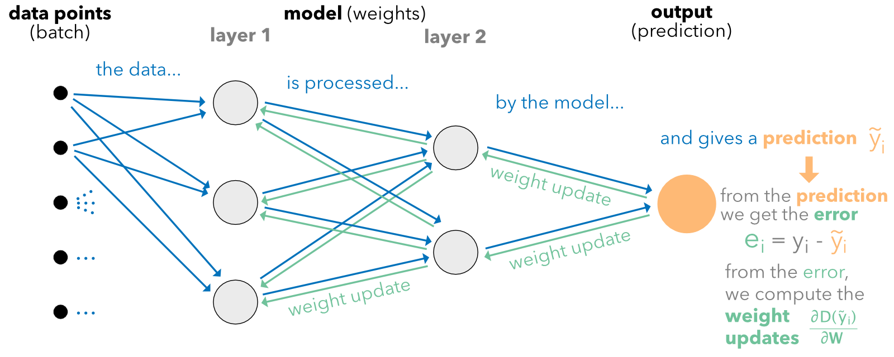
图 7.6：反向传播图。
此操作可以使用不同的样本大小执行任意多次。我们在章节中讨论这个问题 7.3.
学习率 \(\eta\) 可以细化。减少过度拟合的一种选择是在每个epoch之后强制减少更新的强度。一种可能的参数形式是 \(\eta=\alpha e^{- \beta t}\), 其中 \(t\) 是纪元并且 \(\alpha,\beta>0\)。另一种更复杂的方法是诉诸所谓的 动量 （其源于 Polyak (1964)): \[\begin{align} \tag{7.4} \textbf{W}_{t+1} & \leftarrow \textbf{W}_{t} - \textbf{m}_t \quad \text{with} \nonumber \\ \textbf{m}_t & \leftarrow \eta \frac{\partial D(\tilde{y}_i)}{\partial \textbf{W}_{t}}+\gamma \textbf{m}_{t-1}, \end{align}\] 其中 \(t\) 是权重更新的索引。动量的想法是通过包含上次调整的记忆项来加速收敛（\(\textbf{m}_{t-1}\)）并在当前更新中朝着相同的方向前进。参数 \(\gamma\) 通常取0.9。
更复杂和增强的方法已逐步开发出来：
- Nesterov (1983) 通过预测参数的未来变化来改进动量项；
- 阿达格勒（Duchi, Hazan, and Singer (2011)）对每个参数使用不同的学习率；
- 阿达德尔塔 (Zeiler (2012)）和亚当（Kingma and Ba (2014)）结合了Adagrad和Momentum的思想。
最后，在某些退化情况下，某些梯度可能会爆炸并使权重远离其最佳值。为了避免这种现象，学习库实现了梯度裁剪。用户指定梯度的最大幅度，通常表示为范数。每当梯度超过这个幅度时，它就会重新调整以达到授权的阈值。因此，方向保持不变，但调整幅度较小。
7.2.4 分类的更多细节
在决策树中，最终目标是创建同构集群，前一章概述了实现此目标的过程。对于神经网络，事情的工作方式有所不同，因为目标明确是最小化预测之间的误差 \(\tilde{\textbf{y}}_i\) 和目标标签 \(\textbf{y}_i\)。再说一遍，这里 \(\textbf{y}_i\) 是一个充满零且只有一个的向量 一 表示实例的类。
面对分类问题，诀窍是在网络的最末端使用适当的激活函数。网络终端输出的维度应等于 \(J\) （要预测的类的数量），如果为了简单起见，我们写 \(\textbf{x}_i\) 对于此输出的值，最常用的激活是所谓的 softmax 功能：
\[\tilde{\textbf{y}}_i=s(\textbf{x})_i=\frac{e^{x_i}}{\sum_{j=1}^Je^{x_j}}.\]
这种选择的理由很简单：它可以将任何值作为输入（在实线上），并且其总和为任何（有限值）输出的一。与树类似，这会产生类别上的“概率”向量。通常，所选择的损失是用于树的熵的概括。给定目标标签 \(\textbf{y}_i=(y_{i,1},\dots,y_{i,L})=(0,0,\dots,0,1,0,\dots,0)\) 和预测输出 \(\tilde{\textbf{y}}_i=(\tilde{y}_{i,1},\dots,\tilde{y}_{i,L})\)，交叉熵定义为
\[\begin{equation} \tag{7.5} \text{CE}(\textbf{y}_i,\tilde{\textbf{y}}_i)=-\sum_{j=1}^J\log(\tilde{y}_{i,j})y_{i,j}. \end{equation}\]
基本上，它是两个论点之间差异的代表。一种简单的解释如下。对于非零标签值，损失为 \(-\log(\tilde{y}_{i,l})\)，而对于所有其他人来说，它为零。在日志中，如果 \(\tilde{y}_{i,l}=1\)，这正是我们所寻求的（即 \(y_{i,l}=\tilde{y}_{i,l}\)）。在应用中，这种最好的情况不会发生，并且当以下情况时，损耗只会增加： \(\tilde{y}_{i,l}\) 向下漂移远离一个。
7.3 我们应该走多深以及其他实际问题
除了前面几节中介绍的自由度之外，用户在构建神经网络时还面临许多自由度。我们提出了构建和训练神经网络时可用的一些经典选择。
7.3.1 架构选择
可以说，第一个选择与网络结构有关。超越前馈与循环的二分法（参见第 ??），迫在眉睫的问题是：网络应该有多大（或多深）。 首先，让我们计算网络中估计（优化）的参数数量（即权重加偏差）。
- 对于第一层，这给出 \((U_0+1)U_1\) 参数，其中 \(U_0\) 是列数 \(\mathbb{X}\) （即解释变量的数量）和 \(U_1\) 是层中的单元数。
- 对于层 \(l\in[2,L]\)，参数个数为 \((U_{l-1}+1)U_l\).
- 对于最终的输出，只需 \(U_L+1\) 参数。
- 总的来说，这意味着要优化的值总数是 \[\mathcal{N}=\left(\sum_{l=1}^L(U_{l-1}+1)U_l\right)+U_L+1\]
与任何模型一样，参数的数量应远小于实例的数量。没有固定的比例，但如果样本量是最好的 至少 比参数数量大十倍。比率低于 5，过度拟合的风险很高。考虑到可用的数据量，这种限制很少成为问题，除非希望使用非常大的网络。
当前金融应用中隐藏层的数量很少超过三到四个。每层单元数 \((U_k)\) 通常选择遵循几何金字塔规则（参见，例如， Masters (1993)）。如果有 \(L\) 隐藏层，具有 \(I\) 输入中的特征和 \(O\) 输出中的维度（对于回归任务， \(O=1\)），那么对于 \(k^{th}\) 层，单位数量的经验法则是 \[U_k\approx \left\lfloor O\left( \frac{I}{O}\right)^{\frac{L+1-k}{L+1}}\right\rfloor.\] 如果只有一层中间层，推荐的代理是 \(\sqrt{IO}\)。如果不是，网络以许多单元开始，并且单元的数量以指数方式减少到输出大小。通常，层数是 2 的幂，因为在高维度中，网络是在图形处理单元 (GPUs) 或张量处理单元 (TPUs) 上进行训练的。当输入的大小等于 2 的幂时，这两种硬件都可以得到最佳使用。
多项研究表明，非常大的架构并不总是比更浅的架构表现得更好（例如， Gu, Kelly, and Xiu (2020b) 和 Orimoloye et al. (2019) 对于高频数据，即不基于因子）。根据经验，最多三个隐藏层似乎足以满足预测目的。
7.3.2 权重更新频率和学习持续时间
在表达式中 (7.2)，这隐含着计算是针对一个给定实例执行的。如果样本量非常大（数十万或数百万个实例），则根据每个点更新权重的计算成本太高。然后，对称为批次的实例组执行更新。样本被（随机）分成固定大小的批次，并且每次更新都按照以下规则执行：
\[\begin{equation} \tag{7.6} \textbf{W} \leftarrow \textbf{W}-\eta \frac{\partial \sum_{i \in \text{batch}} D(\tilde{y}_i)/\text{card}(\text{batch}) }{\partial \textbf{W}}. \end{equation}\]
权重的变化是根据批次中所有实例计算的平均损失来计算的。培训术语包括：
-
纪元：当样本的每个实例都对权重更新（即训练）做出贡献时，就达到一个 epoch。通常，训练 NN 需要几个epoch，最多需要几十个epoch。
-
批量大小：批量大小是用于一次权重更新的样本数量。
- 迭代：迭代次数可以是样本大小除以批量大小的比率，也可以是该比率乘以epoch数。它要么是达到一个 epoch 所需的权重更新次数，要么是整个训练过程中的更新总数。
当批次仅等于一个实例时，该方法称为“随机梯度下降”（SGD）：随机选择实例。当批量大小严格高于 1 且低于实例总数时，学习将通过“迷你”批量（即小批量实例）执行。批次也是随机选择的，但在样本中没有替换，因为对于一个epoch，批次的并集必须等于完整的训练样本。
不可能提前知道多少个 epoch 是合适的。有时，网络在仅仅 5 个 epoch 后就停止学习（验证损失不再减少）。在某些情况下，当验证样本是从接近训练样本分布的分布中抽取时，网络即使在 200 个 epoch 后仍会继续学习。由用户测试不同的值来评估学习速度。在下面的示例中，出于计算目的，我们将epoch 数量保持在较低水平。
7.3.3 处罚和 dropout
在每个级别（层），可以对权重（和偏差）施加约束或惩罚。就像树方法一样，这有助于减慢学习速度，以防止训练样本过度拟合。惩罚直接对损失函数执行，目标函数采用以下形式
\[O=\sum_{i=1}^I \text{loss}(y_i,\tilde{y}_i)+ \sum_{k} \lambda_k||\textbf{W}_k||_1+ \sum_j\delta_j||\textbf{W}_j||_2^2,\] 其中下标 \(k\) 和 \(j\) 与权重有关 \(L^1\) 和（或） \(L^2\) 予以处罚。
此外，可以在训练期间直接对权重施加特定约束。通常，使用两种类型的约束：
- 范数约束：权重向量或矩阵的最大范数是固定的；
- 非负约束：所有权重必须为正或零。
最后，降低过度拟合风险的另一种（有点奇特的）方法是减少模型的大小（参数数量）。 Srivastava et al. (2014) 建议在训练期间省略单元（因此术语“dropout’）。训练期间随机选择的单元的权重设置为零。所有来自和到该单元的链接都会被忽略，这会机械地缩小网络。在测试阶段，所有单元都回来了，但必须缩放值（权重）以考虑训练阶段期间丢失的激活。
有兴趣的读者可以查看编译的建议 Bengio (2012), Hanin and Rolnick (2018), 和 L. N. Smith (2018) 有关如何配置神经网络的更多提示。一篇致力于股票收益预测超参数调参的论文是 S. I. Lee (2020).
7.4 vanilla MLP 的代码示例和注释
有多种框架和库可以实现稳健且灵活的神经网络构建。其中，Keras 和 Tensorflow（由 Google 开发）可能是我们撰写本书时使用最多的（来自 Facebook 的 PyTorch 是一种替代方案）。为简单起见，并且因为我们相信这是最佳选择，我们使用 Keras 实现 NN（这是 Tensorflow 的高级 API，请参阅 https://www.tensorflow.org）。原始 Python 实现参考 https://keras.io，R 版本的详细信息可以在这里找到： https://keras.rstudio.com。我们建议在继续之前进行彻底的安装。因为 Tensorflow 和 Keras 的本机版本是用 Python 编写的（并由 R 通过 reticulate 包调用），下面需要可运行的 Python 版本。要安装 Keras，请按照以下网址提供的说明进行操作： https://keras.rstudio.com.
在本节中，我们详细（尽管远非详尽）说明如何使用 Keras 训练神经网络。为了完整起见，我们分两步进行。第一个涉及非常简单的回归练习。其目的是让读者熟悉Keras的语法。在第二步中，我们列出了 Keras 提出的许多选项来执行分类练习。通过这两个例子，我们涵盖了前馈多层感知器范围内的大多数主流主题。
7.4.1 回归示例
在我们进入 NN 的核心之前，需要进行一个简短的数据准备阶段。正如惩罚回归（glmnet 包）和提升树（xgboost 包）一样，数据必须分为四个部分，即两个二分法的组合：训练与测试以及标签与特征。我们在下面定义相应的变量。为简单起见，第一个示例是回归练习。下面将详细介绍分类任务。
NN_train_features <- dplyr::select(training_sample, features) %>% # Training features
as.matrix() # Matrix = important
NN_train_labels <- training_sample$R1M_Usd # Training labels
NN_test_features <- dplyr::select(testing_sample, features) %>% # Testing features
as.matrix() # Matrix = important
NN_test_labels <- testing_sample$R1M_Usd # Testing labels在Keras中，神经网络的训练通过三个步骤进行：
- 定义网络的结构/架构；
- 设置损失函数和学习过程（权重更新选项）；
- 通过指定批量大小和轮数（epoch）进行训练。
我们从一个非常简单的架构开始，有两个隐藏层。
library(keras)
# install_keras() # To complete installation
model <- keras_model_sequential()
model %>% # This defines the structure of the network, i.e. how layers are organized
layer_dense(units = 16, activation = 'relu', input_shape = ncol(NN_train_features)) %>%
layer_dense(units = 8, activation = 'tanh') %>%
layer_dense(units = 1) # No activation means linear activation: f(x) = x.结构体的定义非常直观，使用了 sequential 一种语法，其中一个输入由一层迭代转换，直到最后一次迭代给出输出。每层取决于两个参数：单元数量和应用于该层输出的激活函数。一个重要的点是第一层的 input_shape 参数。它是第一层所必需的，等于特征数。对于后续层，input_shape 由前一层的单元数量决定；因此它不是必需的。当前可用的激活列于 https://keras.io/activations/。我们在倒数第二层中使用双曲正切，因为它会产生正输出和负输出。当然，最后一层也可以生成负值，但最好在最终输出之前满足此属性。
model %>% compile( # Model specification
loss = 'mean_squared_error', # Loss function
optimizer = optimizer_rmsprop(), # Optimisation method (weight updating)
metrics = c('mean_absolute_error') # Output metric
)
summary(model) # Model architecture## Model: "sequential"
## __________________________________________________________________________________________
## Layer (type) Output Shape Param #
## ==========================================================================================
## dense_2 (Dense) (None, 16) 1504
## __________________________________________________________________________________________
## dense_1 (Dense) (None, 8) 136
## __________________________________________________________________________________________
## dense (Dense) (None, 1) 9
## ==========================================================================================
## Total params: 1,649
## Trainable params: 1,649
## Non-trainable params: 0
## __________________________________________________________________________________________模型的摘要按从输入到输出（前向传递）的顺序列出了各层。因为我们使用 93 个特征，所以第一层的参数数量（16 个单元）为 93 加一（偏差）乘以 16，即 1504。对于第二层，输入数量等于前一层输出的大小 (16)。因此，考虑到第二层有 8 个单元，参数总数为 (16+1)*8 = 136。
我们将损失函数设置为标准均方误差。其他损失列于 https://keras.io/losses/，其中一些仅适用于回归（MSE、MAE），其他仅适用于分类（分类交叉熵，请参阅方程 (7.5)）。 RMS 传播优化器是经典的小批量反向传播实现。对于其他权重更新算法，我们参考 https://keras.io/optimizers/。度量是用于评估模型质量的函数。它可能与损失不同：例如，使用熵进行训练，使用准确性作为性能指标。
最后阶段将模型与数据进行拟合，并需要一些额外的训练参数：
fit_NN <- model %>%
fit(NN_train_features, # Training features
NN_train_labels, # Training labels
epochs = 10, batch_size = 512, # Training parameters
validation_data = list(NN_test_features, NN_test_labels) # Test data
)
plot(fit_NN) + theme_light() # Plot, evidently!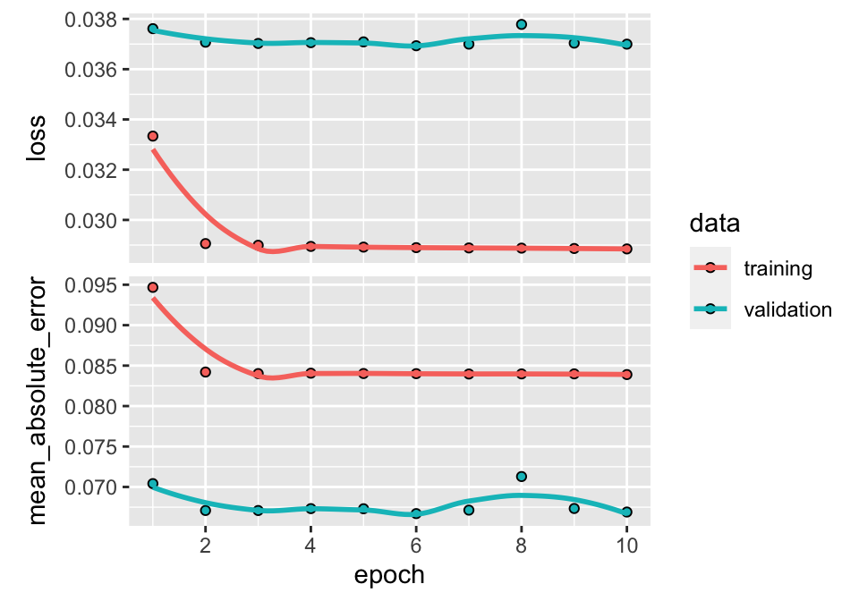
图 7.7：经过训练的神经网络的输出（回归任务）。
批量大小是相当任意的。由于与 GPUs 训练相关的技术原因，这些大小通常是 2 的幂。
在 Keras 中，训练模型的绘图显示了四种不同的曲线（如图所示） 7.7）。上图显示了随着 epoch 数量的增加，损失的改善（或缺乏）。通常，算法首先快速学习，然后收敛到任何额外的epoch都不会改善拟合的点。在上面的例子中，这一点来得相当快，因为在第四个epoch之后很难注意到任何增益。两种颜色显示两个样本的性能：训练样本和测试样本。通过构造，训练样本的损失总是会有所改善（甚至略有改善）。当对测试样本的影响可以忽略不计时（曲线是平坦的，就像这里的情况一样），模型无法泛化样本外：通过对原始样本进行训练获得的增益不会转化为先前未见过的数据的增益；因此，该模型似乎正在学习噪声。
第二张图显示了相同的行为，但使用度量函数计算。两条曲线（损耗和指标）之间的相关性（绝对值）通常很高。如果其中一个是平的，另一个也应该是平的。
为了获取模型的参数，用户可以调用get_weights(model)。18 我们不执行这里的代码，因为输出的大小太大，因为有数千个权重。
最后，从实际的角度来看，预测是通过通常的predict()函数获得的。我们在测试样本上使用下面的这个函数来计算命中率。
## [1] 0.5456358同样，命中率介于 50% 到 55% 之间，即 似乎 相当不错。大多数时候，神经网络的权重是随机初始化的。因此，具有相同架构和相同训练数据的两个独立训练的网络很可能会导致非常不同的预测和性能！绕过此问题的一种方法是冻结随机数生成器。还可以通过 set_weights() 函数加载权重来轻松交换模型。
7.4.2 分类示例
我们通过一个更详细的例子来探索神经网络。目的是对二进制标签 R1M_Usd_C 进行分类任务。在继续之前，我们需要正确设置标签格式。为此，我们采用 one-hot 编码（参见第 1 节） 4.5.2).
library(dummies) # Package for one-hot encoding
NN_train_labels_C <- training_sample$R1M_Usd_C %>% dummy() # One-hot encoding of the label
NN_test_labels_C <- testing_sample$R1M_Usd_C %>% dummy() # One-hot encoding of the label标签 NN_train_labels_C 和 NN_test_labels_C 有两列：第一列标记回报率高于中值的实例，第二列标记回报率低于中值的实例。请注意，我们不会更改特征变量：它们保持不变。下面，我们设置的网络结构与第一个网络相比具有许多附加特性。
model_C <- keras_model_sequential()
model_C %>% # This defines the structure of the network, i.e. how layers are organized
layer_dense(units = 16, activation = 'tanh', # Nb units & activation
input_shape = ncol(NN_train_features), # Size of input
kernel_initializer = "random_normal", # Initialization of weights
kernel_constraint = constraint_nonneg()) %>% # Weights should be nonneg
layer_dropout(rate = 0.25) %>% # Dropping out 25% units
layer_dense(units = 8, activation = 'elu', # Nb units & activation
bias_initializer = initializer_constant(0.2), # Initialization of biases
kernel_regularizer = regularizer_l2(0.01)) %>% # Penalization of weights
layer_dense(units = 2, activation = 'softmax') # Softmax for categorical output在我们开始评论上面使用的许多选项之前，我们强调 Keras 模型与许多 R 变量不同，是可变对象。这意味着调用模型后的任何管道%>%都会改变它。因此，后续的训练不是从头开始，而是从前一次训练的结果开始。
首先，选择上面和下面使用的选项作为说明性示例，并不用于特别提高模型的质量。与部分相比的第一个变化 7.4.1 是激活函数。前两个只是新情况，而第三个（对于输出层）是必需的。事实上，由于目标是分类，因此输出的维度必须等于标签的类别数。产生多元变量的激活是 softmax 函数。请注意，我们还必须指定输出层中的类（类别）数量。
第二个主要创新是与参数相关的选项。一系列选项涉及权重和偏差的初始化。在 Keras 中，权重被称为“kernel”。初始化器列表很长，我们建议感兴趣的读者查看 Keras 参考（https://keras.io/initializers/）。其中大多数是随机的，但也有一些是恒定的。
另一个选项是在训练期间应用于权重和偏差的约束和规范惩罚。在上面的示例中，第一层的权重被强制为非负数，而第二层的权重的大小受到因子 (0.01) 乘以其权重的惩罚。 \(L^2\) 规范。
最后，最后的新颖之处是 dropout 层（参见第 1 节） 7.3.3）在第一层和第二层之间。根据这一层，第一层中四分之一的单元将在训练期间被（随机）省略。
培训的具体内容概述如下。
model_C %>% compile( # Model specification
loss = 'binary_crossentropy', # Loss function
optimizer = optimizer_adam(lr = 0.005, # Optimisation method (weight updating)
beta_1 = 0.9,
beta_2 = 0.95),
metrics = c('categorical_accuracy') # Output metric
)
summary(model_C) # Model structure## Model: "sequential_1"
## __________________________________________________________________________________________
## Layer (type) Output Shape Param #
## ==========================================================================================
## dense_5 (Dense) (None, 16) 1504
## __________________________________________________________________________________________
## dropout (Dropout) (None, 16) 0
## __________________________________________________________________________________________
## dense_4 (Dense) (None, 8) 136
## __________________________________________________________________________________________
## dense_3 (Dense) (None, 2) 18
## ==========================================================================================
## Total params: 1,658
## Trainable params: 1,658
## Non-trainable params: 0
## __________________________________________________________________________________________这里再次进行了许多更改：所有级别都已修改。现在的损失就是交叉熵。因为我们处理两个类别，所以我们采用特定的选择（二元交叉熵），但更通用的形式是选项 categorical_crossentropy 并且适用于任意数量的类别（严格高于 1）。优化器也不同，允许使用多个参数，我们参考 Kingma and Ba (2014)。简而言之，两个 beta 参数控制权重更新中使用的指数加权移动平均线的衰减率。这两个平均值是梯度一阶矩和二阶矩的估计，可用于提高学习速度。上述块中的性能指标是分类准确性。在多类分类中，准确度定义为所有类别和所有预测的平均准确度。由于一个实例的预测是一个权重向量，因此“终端”预测是与最大权重相关的类别。然后，准确性衡量预测等于实现值（即模型正确猜测类别时）的时间比例。
最后，我们继续进行模型的训练。
fit_NN_C <- model_C %>%
fit(NN_train_features, # Training features
NN_train_labels_C, # Training labels
epochs = 20, batch_size = 512, # Training parameters
validation_data = list(NN_test_features,
NN_test_labels_C), # Test data
verbose = 0, # No comments from algo
callbacks = list(
callback_early_stopping(monitor = "val_loss", # Early stopping:
min_delta = 0.001, # Improvement threshold
patience = 3, # Nb epochs with no improvmt
verbose = 0 # No warnings
)
)
)
plot(fit_NN_C) + theme_light()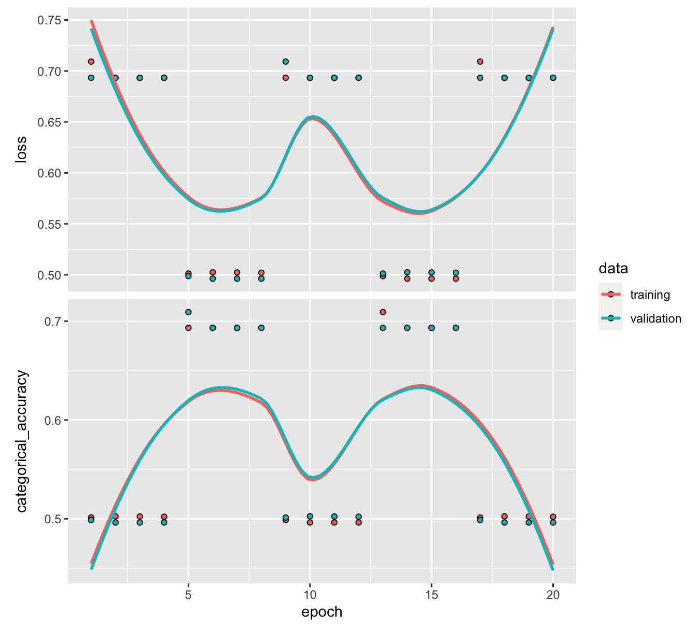
图 7.8：提前停止的经过训练的神经网络（分类任务）的输出。
与之前的培训通话相比，这里只有一个主要区别。在Keras中，回调是可以在学习过程的给定阶段使用的函数。在上面的示例中，我们使用一个这样的函数来在一段时间没有取得任何进展时停止算法。
当数据集很大时，训练可能会很长，特别是当批量较小和/或轮数较多时。不能保证达到全部纪元数是有用的，因为损失或度量函数可能会更快达到稳定水平。因此，如果在指定时间范围内没有实现任何改进，可以非常方便地停止该过程。我们将纪元数设置为 20，但该过程可能会在此之前停止。
在上面的代码中，改进主要集中在验证准确性（“val_loss”；一种替代方案是“val_acc”）。 min_delta 值设置算法继续运行所需的最小改进。因此，除非验证准确率在每个 epoch 获得 0.001 分，否则训练将停止。尽管如此，通过耐心参数引入了一些灵活性，在我们的例子中，该参数断言仅在连续三个epoch没有任何改进后才做出停止决定。在该选项中，详细参数指示函数发出的注释数量。为简单起见，我们不需要任何注释，因此该值设置为零。
图中 7.8，这两个图产生非常不同的曲线。原因之一是第二张图的比例。精度范围非常窄。该范围内的任何变化并不代表总体上有太大变化。训练样本上的模式相对清晰：损失减少，而准确度提高。不幸的是，这并没有转化为测试样本，这表明该模型不能很好地概括样本外。
7.4.3 海关损失
在Keras中，可以定义用户指定的损失函数。在某些情况下这可能很有趣。例如，二次误差有三项 \(y_i^2\), \(\tilde{y}_i^2\) 和 \(-2y_i\tilde{y}_i\)。在实践中，更多地关注后一项是有意义的，因为它是最重要的：我们确实希望预测和实现的值具有相同的符号！下面我们展示如何优化 Keras 中的简单（产品）功能， \(l(y_i,\tilde{y}_i)=(\tilde{y}_i-\tilde{m})^2-\gamma (y_i-m)(\tilde{y}_i-\tilde{m})\), 其中 \(m\) 和 \(\tilde{m}\) 是样本平均值 \(y_i\) 和 \(\tilde{y}_i\)。与 \(\gamma>2\)，我们给予交叉项更多的权重。我们从一个简单的架构开始。
model_custom <- keras_model_sequential()
model_custom %>% # This defines the structure of the network, i.e. how layers are organized
layer_dense(units = 16, activation = 'relu', input_shape = ncol(NN_train_features)) %>%
layer_dense(units = 8, activation = 'sigmoid') %>%
layer_dense(units = 1) # No activation means linear activation: f(x) = x.然后我们对损失函数进行编码并将其集成到模型中。重要的技巧是求助于特定于库的函数（k_functions）。我们对预测值的方差减去实现值和预测值之间的缩放协方差进行编码。下面我们使用五级。
# Defines the loss, we use gamma = 5
metric_cust <- custom_metric("custom_loss",
function(y_true, y_pred) {
k_mean((y_pred - k_mean(y_pred))*(y_pred - k_mean(y_pred)))-5*k_mean((y_true - k_mean(y_true))*(y_pred - k_mean(y_pred)))
})
model_custom %>% compile( # Model specification
loss = metric_cust, #function(y_true, y_pred) custom_loss(y_true, y_pred), # New loss function!
optimizer = optimizer_rmsprop(), # Optim method
metrics = c('mean_absolute_error') # Output metric
)最后，我们准备好训练并简要评估模型的性能。
fit_NN_cust <- model_custom %>%
fit(NN_train_features, # Training features
NN_train_labels, # Training labels
epochs = 10, batch_size = 512, # Training parameters
validation_data = list(NN_test_features, NN_test_labels) # Test data
)
plot(fit_NN_cust) + theme_light() 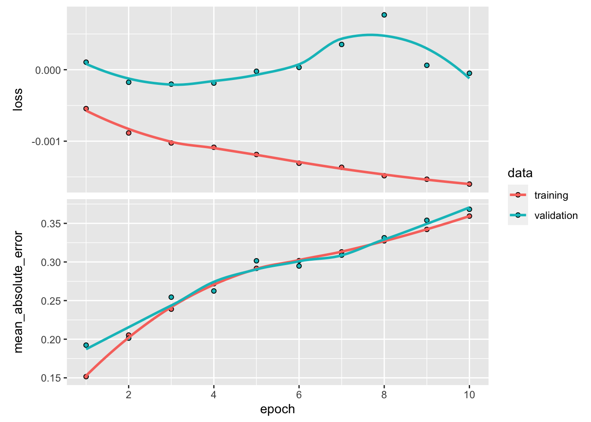
曲线可能朝相反的方向发展。原因之一是，在提高实现值和预测值之间的相关性的同时，我们还增加了预测收益率的平方和。
## [1] 0.4469434结果可能会有所改善。有几个方向可以提供帮助。其中之一可以说是模型应该是动态的而不是静态的（参见章节 12).
7.5 循环网络
7.5.1 介绍
多层感知器是前馈网络，因为数据从左向右流动，中间没有循环。对于某些具有顺序链接的特定任务（例如时间序列或语音识别），跟踪前一个样本发生的情况可能很有用（即存在自然排序）。对“记忆”进行建模的一种简单方法是考虑以下仅具有一个中间层的网络： \[\begin{align*} \tilde{y}_i&=f^{(y)}\left(\sum_{j=1}^{U_1}h_{i,j}w^{(y)}_j+b^{(2)}\right) \\ \textbf{h}_{i} &=f^{(h)}\left(\sum_{k=1}^{U_0}x_{i,k}w^{(h,1)}_k+b^{(1)}+ \underbrace{\sum_{k=1}^{U_1} w^{(h,2)}_{k}h_{i-1,k}}_{\text{memory part}} \right), \end{align*}\]
其中 \(h_0\) 通常设置为零（向量方式）。
这些类型的模型通常被称为 Elman (1990) 模型或 Jordan (1997) 模型如果在后一种情况下 \(h_{i-1}\) 被替换为 \(y_{i-1}\) 在计算中 \(h_i\)。这两种类型的模型都属于循环神经网络 (RNNs) 的总体范围。
的 \(h_i\) 通常称为状态层或隐藏层。该模型的训练很复杂，必须通过在所有实例上展开网络以获得简单的前馈网络并定期对其进行训练来完成。我们用图来说明展开原理 7.9。它显示了一个非常深的网络。第一个输入影响第一层，然后通过 \(h_1\) 以及所有后续层以相同的方式。同样，第二个输入影响除第一个和每个实例之外的所有层 \(i-1\) 会影响输出 \(\tilde{y}_i\) 和所有输出 \(\tilde{y}_j\) 为了 \(j \ge i\)。图中 7.9，训练的参数以蓝色显示。事实上，它们在展开网络的每个层面上都出现了很多次。
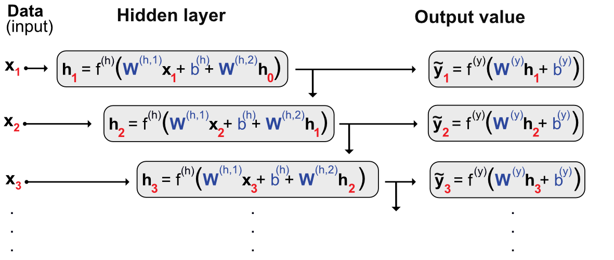
图 7.9：展开循环网络。
上述架构的主要问题是由以下原因引起的内存损失： 梯度消失。由于模型的深度，反向传播中使用的链式法则将意味着大量激活函数导数的乘积。现在如图所示 7.4，这些函数非常平滑，并且它们的导数大多数时候都小于 1（绝对值）。因此，将许多小于一的数字相乘会导致非常小的数字：在某些层之外，学习不会传播，因为调整太小。
引入了一种防止内存逐渐减少的方法 Hochreiter and Schmidhuber (1997) （长短期记忆 - LSTM 模型）。该模型随后被作者简化 Chung et al. (2015) 我们在下面介绍这个更简洁的模型。门控循环单元（GRU）是上面定义的普通循环网络的稍微复杂的版本。它具有以下表示形式： \[\begin{align*} \tilde{y}_i&=z_i\tilde{y}_{i-1}+ (1-z_i)\tanh \left(\textbf{w}_y'\textbf{x}_i+ b_y+ u_yr_i\tilde{y}_{i-1}\right) \quad \text{output (prediction)} \\ z_i &= \text{sig}(\textbf{w}_z'\textbf{x}_i+b_z+u_z\tilde{y}_{i-1}) \hspace{9mm} \text{`update gate'} \ \in (0,1)\\ r_i &= \text{sig}(\textbf{w}_r'\textbf{x}_i+b_r+u_r\tilde{y}_{i-1}) \hspace{9mm} \text{`reset gate'} \ \in (0,1). \end{align*}\] 以紧凑的形式，这给出 \[\tilde{y}_i=\underbrace{z_i}_{\text{weight}}\underbrace{\tilde{y}_{i-1}}_{\text{past value}}+ \underbrace{(1-z_i)}_{\text{weight}}\underbrace{\tanh \left(\textbf{w}_y'\textbf{x}_i+ b_y+ u_yr_i\tilde{y}_{i-1}\right)}_{\text{candidate value (classical RNN)}}, \]
哪里的 \(z_i\) 决定当前值和过去值之间的最佳组合。对于候选值， \(r_i\) 决定保留多少过去/记忆。 \(r_i\) 通常被称为‘重置门’和 \(z_i\) 到‘更新门’.
循环网络的训练有一些微妙之处。事实上，由于实例之间的链接，每个批次必须对应于一个连贯的时间序列。因此，合理的选择是每个资产一批，实例（逻辑上）按时间顺序排列。最后，某些框架中的一个选项是通过传递最终值来在批次之间保留一些内存 \(\tilde{y}_i\) 到下一批（对于这将是 \(\tilde{y}_0\)）。这通常称为有状态模式，应仔细考虑。如果批量大小对应于每个资产的所有观察结果，那么在投资组合预测设置中似乎并不理想：资产之间没有特定的联系。如果针对每个给定资产将数据集分为多个部分，则必须非常谨慎地处理训练。
循环网络和 LSTM 尤其被发现是金融环境中良好的预测工具（例如，参见 Fischer and Krauss (2018), W. Wang et al. (2020), 和 Fister, Perc, and Jagrič (2021)).
7.5.2 代码和结果
与多层感知器相比，循环网络理论上更加复杂。在实践中，它们的实施也更具挑战性。事实上，与前馈架构相比，串行连接需要更多的关注。在资产定价框架中，我们必须将资产分开，因为特定于股票的时间序列不能捆绑在一起。学习将按顺序进行，一次一只股票。
变量的维度至关重要。在Keras中，它们为RNNs定义为：
- 批次的大小：在我们的例子中，它将是资产的数量。事实上，递归关系在资产级别成立，因此每个资产将代表模型将学习的新批次。
- 时间步长：在我们的例子中，它只是日期的数量。
- 特征数量：在我们的例子中，只有一个可能的数字，即预测变量的数量。
为了简单起见并减少计算时间，我们将使用与第 1 节中相同的股票子集 5.2.2。这会产生一个完美的矩形数据集，其中所有日期都具有相同数量的观测值。
首先，我们创建一些新的中间变量。
data_rnn <- data_ml %>% # Dedicated dataset
filter(stock_id %in% stock_ids_short)
training_sample_rnn <- filter(data_rnn, date < separation_date)
testing_sample_rnn <- filter(data_rnn, date > separation_date)
nb_stocks <- length(stock_ids_short) # Nb stocks
nb_feats <- length(features) # Nb features
nb_dates_train <- nrow(training_sample) / nb_stocks # Nb training dates (size of sample)
nb_dates_test <- nrow(testing_sample) / nb_stocks # Nb testing dates然后，我们构造将作为参数传递的变量。我们记得数据文件首先按股票排序，然后按日期排序（请参阅第 1.2).
train_features_rnn <- array(NN_train_features, # Formats the training data into array
dim = c(nb_dates_train, nb_stocks, nb_feats)) %>% # Tricky order
aperm(c(2,1,3)) # The order is: stock, date, feature
test_features_rnn <- array(NN_test_features, # Formats the testing data into array
dim = c(nb_dates_test, nb_stocks, nb_feats)) %>% # Tricky order
aperm(c(2,1,3)) # The order is: stock, date, feature
train_labels_rnn <- as.matrix(NN_train_labels) %>%
array(dim = c(nb_dates_train, nb_stocks, 1)) %>% aperm(c(2,1,3))
test_labels_rnn <- as.matrix(NN_test_labels) %>%
array(dim = c(nb_dates_test, nb_stocks, 1)) %>% aperm(c(2,1,3))最后，我们进入训练部分。为了简单起见，我们只考虑一个只有一层的简单 RNN。其结构概述如下。在循环结构方面，我们选择门控循环单元（GRU）。
model_RNN <- keras_model_sequential() %>%
layer_gru(units = 16, # Nb units in hidden layer
batch_input_shape = c(nb_stocks, # Dimensions = tricky part!
nb_dates_train,
nb_feats),
activation = 'tanh', # Activation function
return_sequences = TRUE) %>% # Return all the sequence
layer_dense(units = 1) # Final aggregation layer
model_RNN %>% compile(
loss = 'mean_squared_error', # Loss = quadratic
optimizer = optimizer_rmsprop(), # Backprop
metrics = c('mean_absolute_error') # Output metric MAE
)循环层有许多可用选项。对于GRUs，我们参考Keras文档 https://keras.rstudio.com/reference/layer_gru.html。我们简要评论我们激活的选项 return_sequences。在许多情况下，输出只是序列的最终值。如果我们不需要返回完整的序列，我们将面临维度问题，因为标签确实是一个完整的序列。 结构确定后，我们就可以进入训练阶段。
fit_RNN <- model_RNN %>% fit(train_features_rnn, # Training features
train_labels_rnn, # Training labels
epochs = 10, # Number of rounds
batch_size = nb_stocks, # Length of sequences
verbose = 0) # No comments
plot(fit_RNN) + theme_light()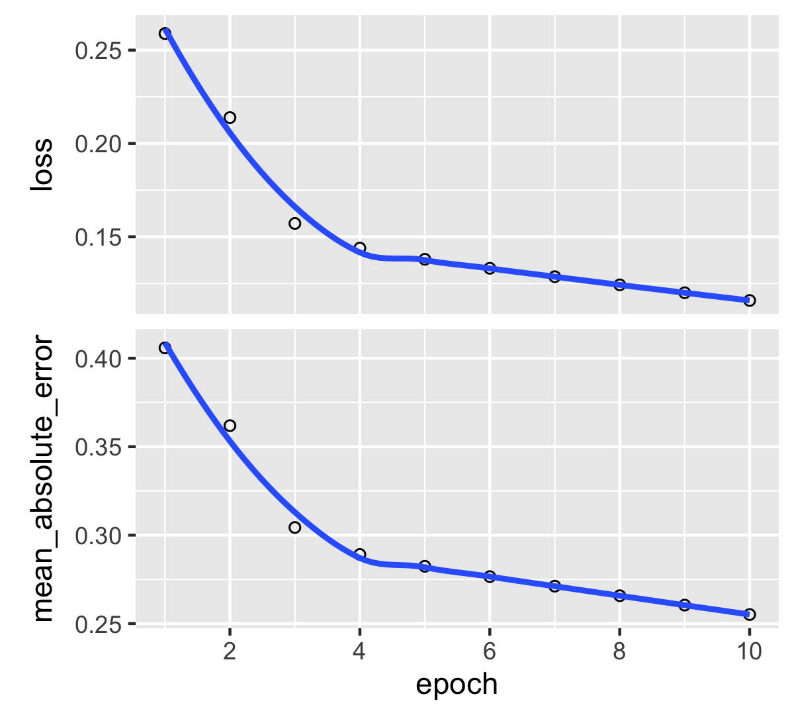
图 7.10：经过训练的循环神经网络的输出（回归任务）。
与我们之前的模型相比，主要区别在于输出（图上的图表） 7.10）和输入（代码）是缺乏验证（或测试）数据。原因之一是 Keras 对 RNNs 的限制非常严格，并且强制训练样本和测试样本共享相同的维度。在我们的情况下，显然情况并非如此，因此我们必须通过复制模型来绕过这个障碍。
new_model <- keras_model_sequential() %>%
layer_gru(units = 16,
batch_input_shape = c(nb_stocks, # New dimensions
nb_dates_test,
nb_feats),
activation = 'tanh', # Activation function
return_sequences = TRUE) %>% # Return the full sequence
layer_dense(units = 1) # Output dimension
new_model %>% keras::set_weights(keras::get_weights(model_RNN))最后，一旦新模型准备就绪并具有匹配的维度，我们就可以继续预测测试值。我们求助于 Predict() 函数并立即计算模型获得的命中率。
pred_rnn <- predict(new_model, test_features_rnn, batch_size = nb_stocks) # Predictions
mean(c(t(as.matrix(pred_rnn))) * test_labels_rnn > 0) # Hit ratio## [1] 0.5007738命中率接近 50%，因此该模型的效果并不比抛硬币好多少。
在我们结束关于 RNNs 的这一节之前，我们提到一种新型架构，称为 \(\alpha\)-RNN 与 LSTMs 和 GRUs 相比更简单。它们由普通的 RNNs 组成，添加了一个简单的自相关性以生成长期记忆。我们参考论文 Matthew F. Dixon (2020) 有关此主题的更多详细信息。
7.6 表格网络 (TabNets)
神经网络在计算机视觉和Python notebooks相关任务中的优越性现已得到充分证实。然而，在 2010 年的许多 ML 锦标赛中，神经网络在处理表格数据时常常被树模型超越（参见 Shwartz-Ziv and Armon (2021)）。这个难题鼓励研究人员构建更适合表格数据库的新颖的 NN 结构。例子包括 Arik and Pfister (2020) 和 Popov, Morozov, and Babenko (2019)。令人惊讶的是，相反的想法也存在： Nuti, Rugama, and Thommen (2019) 尝试调整树和随机森林，使它们的行为更像神经网络。有兴趣的读者可以看看原文。在本小节中，我们详细介绍了中介绍的架构 Arik and Pfister (2020)，即所谓的TabNets。即使他们还很年轻，表格数据的神经网络已经有了自己的调查， Borisov et al. (2021) 并且它们不断得到改进（参见 Gorishniy, Rubachev, and Babenko (2022)).
7.6.1 图层动物园
图中 7.3，两个层的类型相同。它们采用输入向量并返回一个数字，该数字是这些输入的线性组合。在 ML 行话中，这种类型的层称为“完全连接” (FC)。在 Keras 语法中，它们被称为“layer_dense”.
还有许多其他图层类型。上一节中描述的循环层 7.5 是一个例子和卷积层（参见下一节 7.7.3）是另一个层族。一个简单但有用的层是批量归一化（BN）。这个想法是，在处理前一层的输出之前，我们想要规范化进入新层的信息。在我们的大多数应用程序中，输入和输出都是矩阵，BN 相当于对这些矩阵的列执行相同的两个操作。第一个操作是检索平均值，以便列平均值为零。第二个操作是除以标准差，使列方差等于 1。一个有用的特性是所有输入都具有相对相似的统计特性（尽管不一定具有相同的分布）。
因此，在 ML 论文中，模型和架构被表示为一系列层。简而言之，如图 7.3 可以写成： \[\text{input} \rightarrow FC \rightarrow FC \rightarrow \text{output},\]
它的优点是紧凑，但也省略了一些重要的细节，例如每层的单元数量和激活函数的性质。现代深度学习模型非常复杂，像这样的简洁概述更容易阅读。
另一种有趣的层类型是门控线性单元 (GLU)。给定一个矩阵输入 \(\textbf{X}\)，GLU 产量 \[\text{GLU}(\textbf{X}) = (\textbf{XW} + \textbf{b}) \cdot \sigma(\textbf{XW} + \textbf{b}),\] 其中“\(\cdot\)” 是 Hadamard（逐元素）矩阵乘积， \(\sigma\) 是 sigmoid 函数（GLUs 可以推广到其他容易微分的函数）。
7.6.2 稀疏最大激活
在我们直接介绍 TabNets 之前，我们需要介绍一个有趣的概念 Martins and Astudillo (2016)：sparsemax 变换。 sparsemax 的最初想法是简化多类输出的 softmax 激活函数。在分类网络的最后阶段（参见第 7.2.4），激活通常被认为是 \(e^{x_i}/\sum_{j=1}^Je^{x_j}\)，其中向量 \(\textbf{x}\) 是最后一层的输出。由于指数函数的特性，这意味着所有类别最终都会获得严格的正分数或概率。这是不可取的，因为我们通常更喜欢明确的决策，即当不可能的类别的概率为零时。
为了将弱值强制为零， Martins and Astudillo (2016) 诉诸一种特殊的投影，他们称之为 sparsemax。起点是 \(N-1\)维单纯形
\[ \mathbb{S}_N=\left\{ \mathbf{x} \in \mathbb{R}^N \left|\sum_{n=1}^Nx_n=1, \ x_n\ge 0, \ \forall n=1,\dots N.\right.\right\} \] 该空间包含分类结果的所有可能的概率组合 \(N\) 类。给定一个向量 \(\textbf{x}\)，sparsemax函数定义为 \[\text{sparsemax}(\textbf{x}) = \underset{\textbf{z} \in \mathbb{S}_N}{\text{argmin}} \ ||\textbf{z} - \textbf{x}||,\] 这等于投影 \(\textbf{x}\) 到 \(\mathbb{S}_N\)。我们在图1中说明了softmax和sparsemax函数在维度1上的区别 7.11。显然，sparsemax 函数的结果更加清晰：当输入较小时，输出为零，当输入较大时，输出为 1。这会产生更容易处理的差异。在大维度中，这会产生稀疏输出，其具有所需的属性（较小的编码大小，更简单的解释）。
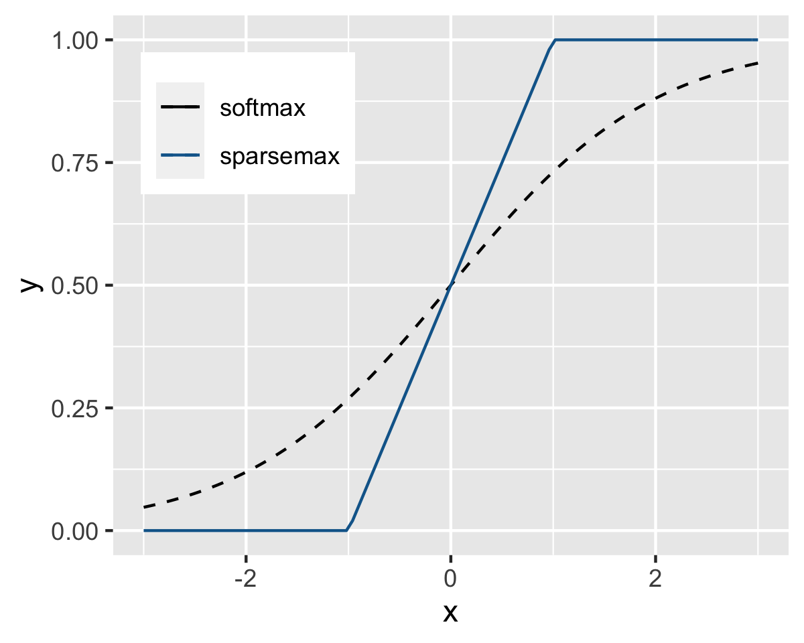
图 7.11： 一维中的 Softmax 与 sparsemax。
7.6.3 特征选择
TabNets 的一个关键要素是它们是这样的事实，可以这么说“一刀切（类似于 Auto-ML，他们的目标是提供一个可以解决大量问题的打包解决方案。）。这就是批量归一化层非常有用的原因：它们可以处理非常不同类型的数字输入。
TabNets的第一个重要组成部分是特征选择。其基本原理是，我们希望从重要的预测变量中更深入地学习，而不是在噪声变量上浪费时间。按照“vanilla”NNs 的惯例，我们考虑矩形（矩阵形状）批次的情况 \(\textbf{f}\) 尺寸的 \(B \times K\)。在TabNets中，特征的选择采用以下形式： 面具，即另一个相同维度的矩阵，乘以（即折扣）其值。如果元素的掩码值为 1，则该特征仍然存在，如果为零，则该特征消失（比喻而言），在两者之间，其重要性被简单地减弱。
在 TabNets 中，学习是连续的，包括 步骤。每个步骤的索引为 \(i\)。步骤中应用于特征的掩模 \(i\) 是 \(\textbf{M}[i]\)，这样屏蔽的特征是 \(\textbf{M}[i] \cdot \textbf{f}\)，又在其中 \(\cdot\) 表示哈达玛积。
[待完成]
7.6.5 代码和结果
在 R 中，TabNets 通过以下方式编码 torch 框架。它们需要安装 torch 和 tabnet 两个软件包。我们首先定义网络结构，即设置超参数。我们也诉诸套餐 防风草 从 tidymodels suite，它允许模型声明中使用统一的语法。
if(!require(torch)){install.packages(c("torch", "tabnet"))}
library(torch) # General framework for NNs
library(tabnet) # Package for tabular networks
library(recipes) # Uniform ML models
library(parsnip)
set.seed(42) # Random seed
tab_model <- tabnet(
mode = "regression", # ML task
epochs = 5, # Nb epochs / rounds
batch_size = 4000, # Batch size
virtual_batch_size = 1024,
penalty = 1,
learn_rate = 0.01,
decision_width = 16,
attention_width = 8,
num_independent = 1,
num_shared = 1,
num_steps = 5,
momentum = 0.02
) %>%
set_engine("torch") 接下来，我们提供学习所需的特征和标签。为了简单起见，我们在较小的数据集上对其进行训练。请注意，语法与 R 中的简单模型（例如广义线性模型）相同。
data_short <- data_ml %>% # Shorter dataset
filter(stock_id %in% stock_ids_short,
date < "2010-01-01") %>%
dplyr::select(c("stock_id", "date", features_short, "R1M_Usd"))
fit_tabnet <- tab_model %>%
fit(R1M_Usd ~ Div_Yld + Eps + Mkt_Cap_12M_Usd + Mom_11M_Usd + Pb + Vol1Y_Usd,
data = data_short) 最后，我们做出一些预测并计算命中率。
tab_pred <- predict(fit_tabnet,
data_ml %>% # A test set
dplyr::filter(stock_id %in% stock_ids_short,
date > "2010-01-01") %>%
dplyr::select(c("stock_id", "date", features_short, "R1M_Usd")))
mean((data_ml %>% # A test set
dplyr::filter(stock_id %in% stock_ids_short,
date > "2010-01-01") %>%
pull(R1M_Usd)) * tab_pred > 0)## [1] 0.50611847.7 其他常见架构
在本节中，我们将介绍其他网络结构。因为它们不太主流并且通常更难实现，所以我们不提供代码示例并坚持理论介绍。
7.7.1 生成对抗网络
生成对抗网络（GANs）的想法是通过尝试欺骗经典神经网络来提高其准确性。这个非常流行的想法是由 Goodfellow et al. (2014)。想象一下，您是毕加索画作的专家，并且您吹嘘能够轻松识别画家的任何作品。提高技能的一种方法是与造假者进行测试。真正的专家应该能够区分真正的毕加索原作和赝品。这就是GANs的原理。
GANs 由两个神经网络组成：第一个神经网络尝试学习，第二个神经网络尝试愚弄第一个神经网络（使其出错）。就像上面的例子一样，也有两组数据：一组（\(\textbf{x}\)）是真实的（或正确的），源于经典训练样本和另一个（\(\textbf{z}\)）是假的，由造假者网络生成。
在 GAN 命名法中，学习的网络是 \(D\) 因为它应该是歧视性的，而伪造者则是 \(G\) 因为它会产生虚假数据。在他们最初的表述中，GANs 的目的是分类。为了方便演示，我们保留了这个范围。判别网络有一个简单的（标量）输出：其输入来自真实数据（与假数据）的概率。输入为 \(G\) 是一些任意噪声，其输出与输入具有相同的形状/形式 \(D\).
我们直接陈述一个GAN的理论公式并在下面进行评论。 \(D\) 和 \(G\) 玩以下极小极大游戏： \[\begin{equation} \tag{7.7} \underset{G}{\min} \ \underset{D}{\max} \ \left\{ \mathbb{E}[\log(D(\textbf{x}))]+\mathbb{E}[\log(1-D(G(\textbf{z})))] \right\}. \end{equation}\]
首先，让我们将该表达式分解为两个部分（优化器）。第一部分（即第一个最大值）是经典部分：算法寻求最大化为其试图分类的所有示例分配正确标签的概率。正如经济学和金融学中所做的那样，该计划并没有最大化 \(D(\textbf{x})\) 本身是平均的，而是一种函数形式（如效用函数）。
在左侧，由于期望是由 \(\textbf{x}\)，目标必须是增加产量。在右侧，通过假实例评估期望，正确的分类是相反的，即， \(1-D(G(\textbf{z}))\).
第二个总体部分旨在最小化算法在模拟数据上的性能：它的目标是缩小 \(D\) 发现数据确实已损坏。下图提供了网络结构的摘要版本 (7.8).
\[\begin{equation} \tag{7.8} \left. \begin{array}{rlll} \text{training sample} = \textbf{x} = \text{true data} && \\ \text{noise}= \textbf{z} \quad \overset{G}{\rightarrow} \quad \text{fake data} & \end{array} \right\} \overset{D}{\rightarrow} \text{output = probability for label} \end{equation}\]
在ML-based资产定价中，GANs最引人注目的应用被引入 Luyang Chen, Pelger, and Zhu (2020)。他们的目的是利用矩表达的方法 \[\mathbb{E}[M_{t+1}r_{t+1,n}g(I_t,I_{t,n})]=0,\] 这是方程的应用 (3.7) 其中工具变量 \(I_{t,n}\) 取决于公司（例如特征和属性），而 \(I_t\) 是宏观经济变量（总股息收益率、波动水平、信用利差、期限利差等）。功能 \(g\) 产生一个 \(d\)- 维输出，因此上面的方程导致 \(d\) 矩条件。诀窍是将 SDF 建模为未知的资产组合 \(M_{t+1}=1-\sum_{n=1}^Nw(I_t,I_{t,n})r_{t+1,n}\)。主要歧视网络（\(D\)) 是通过权重近似 SDF 的值 \(w(I_t,I_{t,n})\)。二次生成网络是通过以下方式创造时刻条件的网络： \(g(I_t,I_{t,n})\) 在上面的等式中。
程序给出了网络的完整规范： \[\underset{w}{\text{min}} \ \underset{g}{\text{max}} \ \sum_{j=1}^N \left\| \mathbb{E} \left[\left(1-\sum_{n=1}^Nw(I_t,I_{t,n})r_{t+1,n} \right)r_{t+1,j}g(I_t,I_{t,j})\right] \right\|^2,\]
哪里的 \(L^2\) 规范适用于 \(d\) 通过生成的值 \(g\)。资产定价方程（矩）不被视为等式，而是被视为近似关系。网络定义为 \(\textbf{w}\) 是资产定价建模者，并尝试确定最佳可能的模型，而网络定义为 \(\textbf{g}\) 试图找到最坏的可能条件，从而使模型表现不佳。我们参考原始文章来了解这两个网络的完整规范。在他们的实证部分， Luyang Chen, Pelger, and Zhu (2020) 报告指出，与纯粹的预测性“普通”方法（例如在 Gu, Kelly, and Xiu (2020b)。十分位排序投资组合的样本外行为（基于模型的预测）显示出相对于十分位顺序的单调模式。
GANs 还可以用于生成人工金融数据（参见 Efimov and Xu (2019), Marti (2019), Wiese et al. (2020), Ni et al. (2020)，并且相关地， Buehler et al. (2020)），但这个主题超出了本书的范围。
7.7.2 自动编码器
在最近的文献中，自动编码器（AEs）用于 Huck (2019) （投资组合管理），以及 Gu, Kelly, and Xiu (2020a) （资产定价）。
AEs 是一个奇怪的神经网络家族，因为它们属于非监督算法。用监督术语来说，它们的标签等于输入。与 GANS 一样，自动编码器由两个网络组成，尽管结构非常不同：第一个网络将输入编码为某种中间输出（通常称为代码），第二个网络将代码解码为输入的修改版本。
\[\begin{array}{ccccccccc} \textbf{x} & &\overset{E}{\longrightarrow} && \textbf{z} && \overset{D}{\longrightarrow} && \textbf{x}' \\ \text{input} && \text{encoder} && \text{code} && \text{decoder} && \text{modified input} \end{array}\]
由于自动编码器不属于监督算法大家族，因此我们将其展示推迟到第 1 节 15.2.3.
文章 Gu, Kelly, and Xiu (2020a) 诉诸 AEs 的想法，同时增加了其资产定价模型的复杂性。从简单的规格来看 \(r_t=\boldsymbol{\beta}_{t-1}\textbf{f}_t+e_t\) （为了符号简单起见，我们省略了资产依赖性），他们添加了贝塔取决于公司特征的假设，而这些因素可能是收益率本身的非线性函数。该模型采用以下形式： \[\begin{equation} \tag{7.9} r_{t,i}=\textbf{NN}_{\textbf{beta}}(\textbf{x}_{t-1,i})+\textbf{NN}_{\textbf{factor}}(\textbf{r}_t)+e_{t,i}, \end{equation}\] 其中 \(\textbf{NN}_{\textbf{beta}}\) 和 \(\textbf{NN}_{\textbf{factor}}\) 是两个神经网络。上式 看起来 就像自动编码器一样，因为收益率既是输入又是输出。然而，额外的复杂性来自第二个神经网络 \(\textbf{NN}_{\textbf{beta}}\)。现代神经网络库（例如 Keras）允许自定义模型（如上面的模型）。该结构的编码留作练习（见下文）。
7.7.3 关于卷积网络的一句话
由于计算机视觉竞赛中的一系列成功，神经网络在 2010 年开始流行。这些进步背后的算法是卷积神经网络 (CNNs)。虽然它们对于金融预测来说似乎是一个令人惊讶的选择，但计算机科学领域的几个研究团队已经提出了依赖于这种神经网络变体的方法（J.-F. Chen et al. (2016), Loreggia et al. (2016), Dingli and Fournier (2017), Tsantekidis et al. (2017), Hoseinzade and Haratizadeh (2019)）。最近， J. Jiang, Kelly, and Xiu (2020) 提出从价格趋势图像中提取信号。 因此，我们在神经网络的最后一节中简要介绍了其原理。我们为二维的 CNNs 进行了演示，但它们也可以用于一维或三维。
CNNs 之所以有用，是因为它们允许通过保留本地信息来逐步减少大型数据集的维度。图像是像素的矩形。每个像素通常通过三层进行编码，一层对应一种颜色：红色、蓝色和绿色。但为了简单起见，我们只考虑一层，例如 1,000 x 1,000 像素，每个像素都有一个值。为了分析该图像的内容， 卷积层 将通过一些卷积来减少输入的维度。从视觉上看，这种简化是通过使用具有任意权重的矩形扫描和更改值来执行的。
图 7.12 勾勒出这个过程（它的强烈灵感来自于 Hoseinzade and Haratizadeh (2019)）。原始数据是一个矩阵 \((I\times K)\) \(x_{i,k}\) 权重也是一个矩阵 \(w_{j,l}\) 尺寸的 \((J\times L)\) 与 \(J<I\) 和 \(L<K\)。扫描变换每个矩形的大小 \((J\times L)\) 化为一个实数。因此，输出的大小较小： \((I-J+1)\times(K-L+1)\)。如果 \(I=K=1,000\) 和 \(J=L=201\)，则输出具有维度 \((800\times 800)\) 这已经小得多了。输出值由下式给出 \[o_{i,k}=\sum_{j=1}^J\sum_{l=1}^Lw_{j,l}x_{i+j-1,k+l-1}.\]
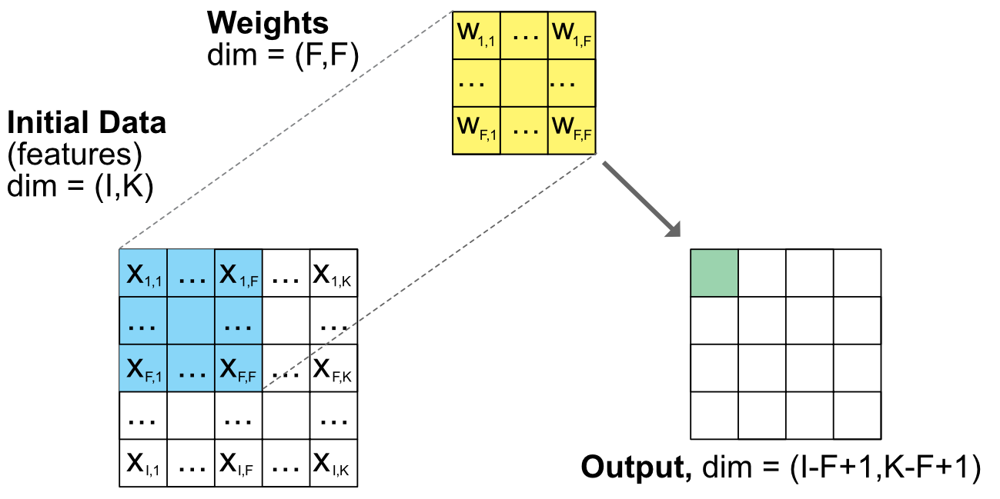
图 7.12：卷积单元示意图。注：尺寸为一般尺寸，与方格数无关。
通过像上面介绍的那样的卷积层序列迭代地减少输出的维度将导致计算成本高昂，并且可能会导致过度拟合，因为权重的数量将非常大。为了有效地减少输出的大小， 池化层 经常被使用。池化单元的作用是通过将矩阵简化为简单的度量（例如矩阵的最小值、最大值或平均值）来简化矩阵：
\[o_{i,k}=f(x_{i+j-1,k+l-1}, 1\le j\le J, 1 \le l\le L),\]
其中 \(f\) 是最小值、最大值或平均值。我们在图中展示了池化的例子 7.13 下面。为了提高压缩速度，可以增加步幅以省略单元格。步幅值为 \(v\) 将仅执行该操作 \(v\) 值，从而绕过中间步骤。图中 7.13，左边的两种情况没有采用池化，因此维度的减少正好等于池化大小。当跨步开始行动时（右窗格），减少的程度更加明显。从 1,000 x 1,000 输入，步长为 2 的 2 x 2 池化层将产生 500 x 500 输出：尺寸缩小四倍，如图右侧示意图所示 7.13.
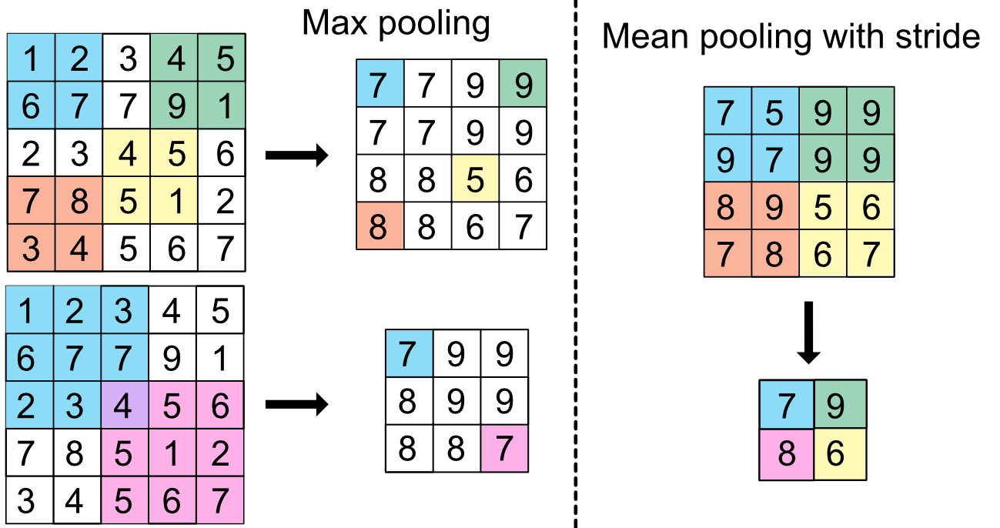
图 7.13：池化单元示意图。
有了这些工具，就有可能构建新的预测工具。在 Hoseinzade and Haratizadeh (2019)，价格报价、技术指标和宏观经济数据等预测因素被输入到 6 层的复杂神经网络中，以预测价格变化的迹象。虽然这显然是一项有趣的计算机科学练习，但这种架构选择背后的深层经济动机仍不清楚。 Sangadiev et al. (2020) 使用 CNN 依靠限价订单簿数据构建投资组合。
7.8 编码练习
- 本练习的目的是对中描述的自动编码器模型进行编码 Gu, Kelly, and Xiu (2020a) （见章节 7.7.2）。编码 NNs 时，必须严格报告尺寸。这就是为什么我们重现图中模型的图 7.14 它清楚地显示了输入和输出及其尺寸。
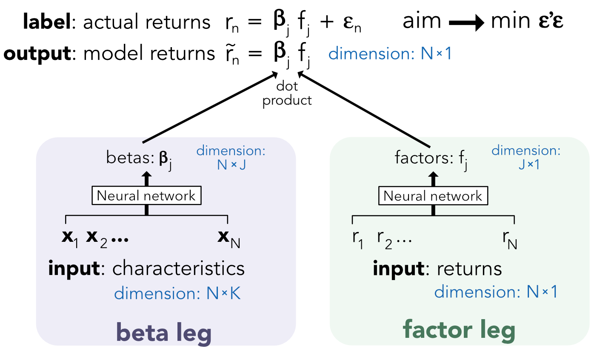
图 7.14：自动编码器定价模型示意图。
为了充分发挥 Keras 的潜力，必须改用更通用的 NNs 配方。这可以通过所谓的 functional API: https://keras.rstudio.com/articles/functional_api.html.
- 本练习的目的是演示简单 NNs 的通用近似。让我们采用一个简单的函数，例如区间 [0,6] 上的 sin(x)。使用具有一层和 16 个单元的简单前馈神经网络来模拟此功能。然后尝试使用 128 个单位，看看它如何改善贴合度。
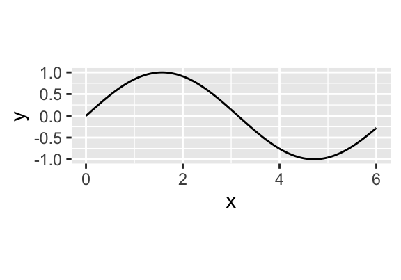
图 7.15： 目标：近似这个简单函数。